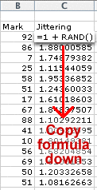
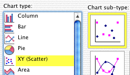

Excel
Excel is a poor tool to use for displaying data graphically. Many simple graphical displays simply cannot be drawn in Excel. However for most teachers, Excel is the only software that is available. Where possible, we will therefore try to give some guidelines for using Excel.
Dot plots
Excel does not have commands to draw dot plots. In particular, stacked dot plots cannot be produced.
However it is possible (with some effort) to draw a jittered dot plot. It is assumed that the data to be displayed are contained in an Excel column. Firstly create a new column containing the jittering by typing the formula "=1 + RAND()" next to the first mark then copying this formula down against all other marks. (Edit > Fill > Down)

Now drag over the values in the two columns (marks and jittering) and choose the command Insert > Chart.... In the resulting Chart Wizard dialog box, select a scatterplot.

The next page of the Chart Wizard should show a draft of your jittered dot plot. (If not, you should click the Data Series tab and correct the X- and Y-series to refer to the marks and jittering columns of your spreadsheet.)
In the next page, adjust some of the options for the display:
- Axis
- Do not display the axis for the jittering (the Y axis)
- Gridlines
- Do not display gridlines
- Legend
- Do not display the legend
If you now click Finish, a jittered dot plot should appear on your spreadsheet. The command Chart > Chart Options... can be used to further edit the display of the jittered dot plot.
Drawing stem and leaf plots
Excel cannot draw stem and leaf plots. Fortunately they are easy to draw with pencil and paper. Indeed they were originally devised as a simple pencil-and-paper way to explore a distribution of values.
| Stem and leaf plots are mostly used because they are easy to draw by hand. |
- Write stems in a column
- All possible distinct stems within the range of the data should be written down. If a split stem and leaf plot is to be drawn, each stem should be repeated 2 or 5 times. The stems can be ordered with either the highest or lowest stem at the top, but be consistent.
- Add the leaves
- Scan through all data values, writing the leaf digits in rows against the corresponding stems. This can be done quickly by hand.
- Sort the leaves
- Sort the leaves against each stem into increasing order. This final step may be omitted for a quick look at the distribution of values.
Example: marks out of 50
The example below illustrates the process of constructing a stem and leaf plot from a list of values (on the right below).
Click on the first value. The 'tens' digit identifies the value's stem and its 'units' digit is written against it. Continue clicking the values in the list to build up the stem and leaf plot.
Finally, click Sort Leaves to sort the leaves into order on each stem.